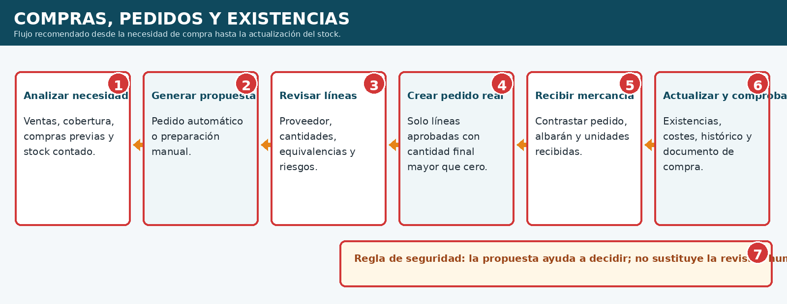
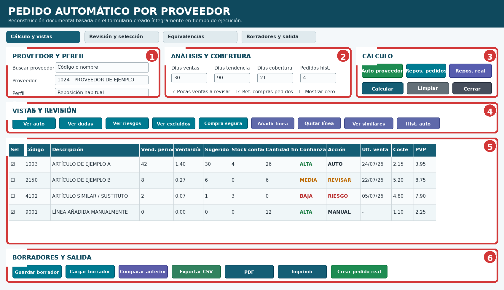
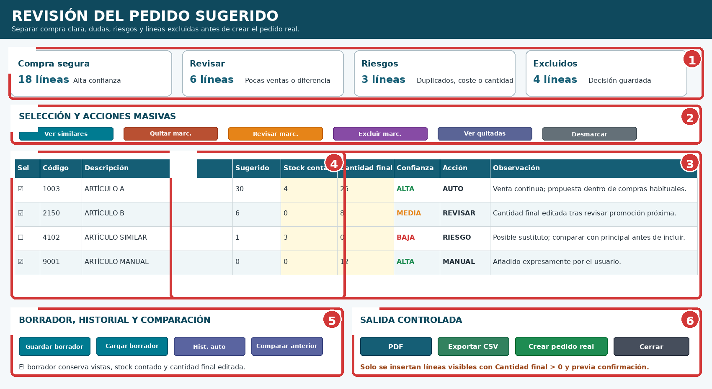
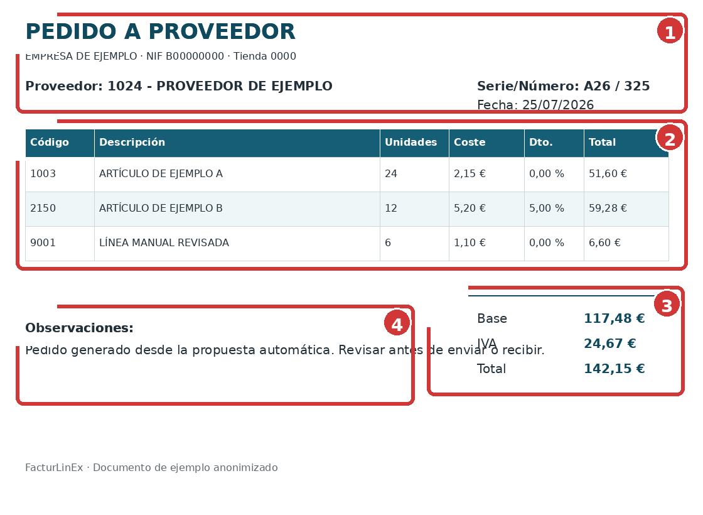
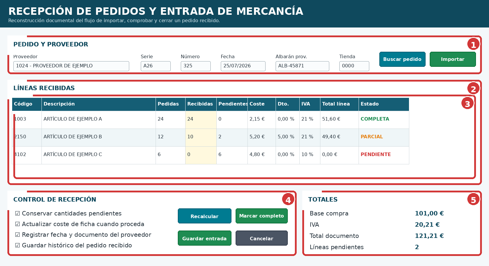
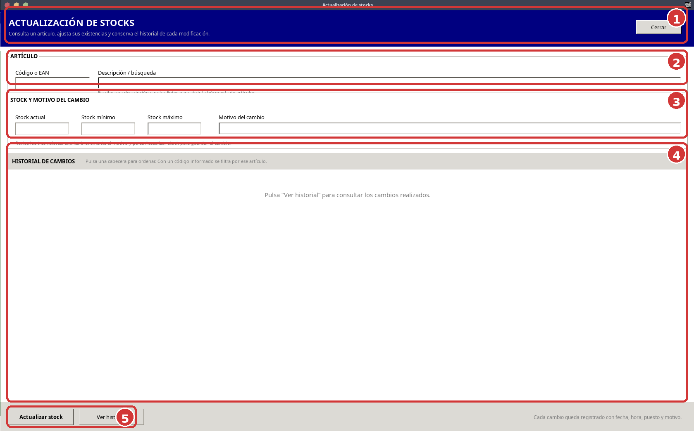

Compras, pedidos y existencias
Primera edición 1.0 FINAL · Manual completo y auditado
7.1 Flujo general de compra #
El ciclo correcto separa claramente la necesidad de compra, la creación del pedido y la recepción. Crear un pedido real no debe aumentar existencias: el stock cambia cuando la mercancía llega y se confirma su entrada.

| N.º | Etapa | Resultado |
|---|---|---|
| 1 | Analizar necesidad | Ventas, tendencia, pedidos anteriores y roturas potenciales. |
| 2 | Generar propuesta | Cantidades sugeridas por proveedor. |
| 3 | Revisar | Cantidad final, confianza, riesgos, equivalencias y similares. |
| 4 | Crear pedido real | Cabecera y líneas pendientes de enviar o recibir. |
| 5 | Recibir mercancía | Unidades recibidas, costes y diferencias comprobadas. |
| 6 | Actualizar stock e histórico | Existencias y trazabilidad del movimiento. |
7.2 Pedidos a proveedores #
Un pedido reúne proveedor, fecha, serie, número, artículos, unidades, costes y observaciones. Antes de confirmarlo deben comprobarse las unidades de compra, los envases, los códigos y que no exista otro pedido reciente pendiente.
- Proveedor correcto y activo.
- Serie y número coherentes.
- Códigos y descripciones revisados.
- Unidades, cajas y equivalencias verificadas.
- Costes y descuentos razonables.
- Pedidos pendientes o duplicados descartados.
7.3 Pantalla del Pedido automático por proveedor #
La pantalla se crea por código y concentra filtros, modos de cálculo, vistas de revisión y salidas. La siguiente imagen es una reconstrucción documental basada en la distribución y controles conocidos.

| N.º | Zona | Uso |
|---|---|---|
| 1 | Proveedor y búsqueda | Localiza el proveedor por código o nombre. |
| 2 | Parámetros | Días de ventas, cobertura, límites, perfil y filtros. |
| 3 | Modos y vistas | Auto proveedor, reposición, compra segura, dudas y riesgos. |
| 4 | Grid | Datos de venta, sugerido, stock contado, cantidad final y confianza. |
| 5 | Estado y progreso | Explica el proceso y muestra tareas largas o incidencias. |
| 6 | Salidas | Borradores, PDF, CSV, impresión y creación del pedido real. |
7.4 Parámetros y modos de cálculo #
| Parámetro o modo | Función |
|---|---|
| Días de ventas | Período reciente utilizado para medir consumo y tendencia. |
| Días de cobertura | Horizonte que se desea cubrir con la compra. |
| Auto proveedor | Separa líneas claras, dudas, riesgos y excluidos. |
| Reposición real | Contrasta compras y ventas reales durante el período de cobertura. |
| Repos. pedidos | Limita los candidatos a los últimos N pedidos históricos del proveedor. |
| Pedidos hist. | Número de pedidos usados como referencia, normalmente 4 y configurable entre 1 y 20. |
| Ref. compras pedidos | Compara la propuesta con cantidades compradas anteriormente para elevar o reducir confianza. |
| Pocas ventas a revisar | Evita que una venta mínima entre automáticamente como compra segura. |
La fórmula orientativa es venta diaria utilizada × días de cobertura, ajustada por los filtros y la información disponible. El stock puede mostrarse como información o introducirse como stock contado; no debe aceptarse ciegamente cuando las existencias no son fiables.
7.5 Columnas y lectura de la propuesta #
Las columnas principales permiten distinguir el cálculo del resultado que realmente se pedirá:
| Columna | Interpretación |
|---|---|
| Vendido período / tendencia / histórico | Referencias de demanda reciente y anterior. |
| Venta/día usada | Consumo diario empleado en el cálculo. |
| Sugerido | Resultado calculado por el módulo. |
| Stock contado | Existencia revisada manualmente cuando se conoce. |
| Cantidad final | Unidades que pasarán al pedido real si son mayores que cero. |
| Confianza | ALTA, MEDIA, BAJA o sin confianza según los datos. |
| Acción | AUTO, REVISAR, EXCLUIR, MANUAL u otra decisión aplicable. |
| Última venta / compra | Ayuda a detectar artículos sin rotación o compras antiguas. |
| Coste, PVP e IVA | Permiten detectar precios extraños o márgenes incoherentes. |
7.6 Revisión, selección y artículos similares #

| N.º | Herramienta | Finalidad |
|---|---|---|
| 1 | Vistas | Ver compra segura, auto, dudas, riesgos y excluidos. |
| 2 | Selección múltiple | Marcar varias líneas y aplicar decisiones de forma controlada. |
| 3 | Acciones | Quitar, revisar, excluir, recuperar quitadas o desmarcar. |
| 4 | Similares | Localiza posibles sustitutos por texto, cantidad o equivalencia. |
| 5 | Edición | Corrige stock contado y cantidad final. |
| 6 | Líneas manuales | Añade un artículo necesario o quita una línea no deseada. |
Los similares son una ayuda para detectar duplicados, formatos alternativos o sustitutos. No deben eliminarse automáticamente: el usuario decide qué línea conservar y qué cantidad pedir.
7.7 Borradores, historial y creación del pedido real #
Guardar borrador conserva el estudio completo —líneas automáticas, dudas, riesgos y excluidos— junto con el stock contado y la cantidad final editados. Al cargarlo deben reconstruirse las vistas sin recalcular.
| Función | Uso seguro |
|---|---|
| Guardar borrador | Interrumpir la revisión sin perder decisiones ni cantidades. |
| Cargar borrador | Recuperar el último estudio del proveedor. |
| Borrar borrador | Elimina solo el borrador, nunca el pedido real. |
| Comparar anterior | Contrasta con el último pedido real del proveedor. |
| Hist. auto | Muestra pedidos reales creados desde este módulo. |
| Crear pedido real | Inserta únicamente líneas visibles con Cantidad final mayor que cero, tras confirmación. |
7.8 PDF, CSV e impresión #

| N.º | Bloque | Comprobación |
|---|---|---|
| 1 | Cabecera | Proveedor, fecha, perfil y parámetros. |
| 2 | Líneas | Códigos, descripción, cantidad y precios. |
| 3 | Resumen | Unidades, coste e importes. |
| 4 | Avisos | Revisión pendiente, riesgos o datos de ejemplo. |
CSV facilita una revisión externa; PDF y vista previa permiten archivar o imprimir. La exportación no crea el pedido real ni modifica existencias.
7.9 Recepción de mercancía #

| N.º | Zona | Uso |
|---|---|---|
| 1 | Cabecera | Proveedor, serie, número y fecha del pedido. |
| 2 | Líneas pedidas | Artículo, unidades solicitadas y coste previsto. |
| 3 | Recepción | Unidades recibidas, pendientes y diferencias. |
| 4 | Costes y documento | Albarán o factura del proveedor, descuentos y precios. |
| 5 | Confirmación | Importa la recepción y actualiza datos solo tras revisión. |
Si una entrega es parcial, deben quedar unidades pendientes. Antes de confirmar, compare mercancía física, documento del proveedor, cantidades, unidades de envase, coste e IVA.
7.10 Actualización de existencias e historial #

| N.º | Zona | Uso |
|---|---|---|
| 1 | Artículo | Código o EAN y descripción. |
| 2 | Valores | Stock actual, mínimo, máximo y motivo. |
| 3 | Historial | Cambios registrados y ordenación por columnas. |
| 4 | Acciones | Actualizar stock o consultar todo el historial. |
Sin código, Ver historial debe mostrar todos los movimientos. Cada modificación debe conservar fecha, hora, puesto y motivo. No utilice un ajuste manual para ocultar una recepción mal importada: corrija la causa y documente el cambio.
7.11 Procedimiento recomendado #
- Seleccione el proveedor y revise pedidos pendientes.
- Defina período de ventas, cobertura y perfil.
- Genere Auto proveedor o Repos. pedidos según el caso.
- Revise compra segura, dudas, riesgos, excluidos y similares.
- Corrija stock contado y Cantidad final.
- Guarde borrador cuando la revisión no esté terminada.
- Genere PDF o CSV para la comprobación.
- Consulte Hist. auto y compare el pedido anterior.
- Cree el pedido real tras la confirmación.
- Al recibir, registre cantidades y diferencias reales.
- Compruebe existencias e historial.
7.12 Errores frecuentes #
| Síntoma | Comprobación |
|---|---|
| Sugerencia excesiva | Revise cobertura, tendencia, stock contado y referencia de compras. |
| Artículo con pocas ventas entra solo | Active el filtro de pocas ventas a revisar y ajuste el umbral. |
| Falta un artículo necesario | Use Añadir línea manual y confirme proveedor/código. |
| Posible duplicado | Revise similares, equivalencias, Hist. auto y pedidos pendientes. |
| El borrador pierde líneas | Debe guardar el estudio completo, no solo la vista visible. |
| Crear pedido no inserta una línea | Compruebe que sea visible y Cantidad final sea mayor que cero. |
| Stock cambia al crear pedido | Es incorrecto: el stock cambia al recibir mercancía. |
| Historial vacío sin código | Ver historial debe cargar todos los movimientos. |
| Campo equivocado tras importar | Revise accesos posicionales y sustituya por FieldByName cuando sea seguro. |
7.13 Lista final de comprobación #
- Proveedor, tienda, serie y número correctos.
- Pedidos pendientes y duplicados revisados.
- Parámetros y modo de cálculo adecuados.
- Dudas, riesgos, excluidos y similares comprobados.
- Stock contado y Cantidad final revisados.
- Costes, PVP, IVA y unidades coherentes.
- Borrador guardado cuando procede.
- Hist. auto y pedido anterior consultados.
- Pedido real creado solo tras confirmación.
- Recepción parcial o completa registrada correctamente.
- Existencias e historial verificados.
- Cuadros, números y leyendas de las figuras coinciden.